机器学习 by 李宏毅(7-1)
生成模型--Generative Model
NetWork as Generater
把 network 当作generator 使用, 特别的地方是现在 network 的输入加上一个random 的 variable Z ，Z是从某一个distribution sample 出来的。
network 架构设计
- X 是个向量, Z 是个向量，两个向量直接接起来, 变成一个比较长的向量, 当作network的input
- 或者 X 跟 Z 正好长度一样, 相加以后, 当做network的input
Z 是不固定的, 每一次用这个network 的时候, 都会随机生成一个Z, 所以 Z 每次都不一样, 它是从一个distribution 中 sample 得到，但是 distribution 必须够简单，必须清楚它的数学方程
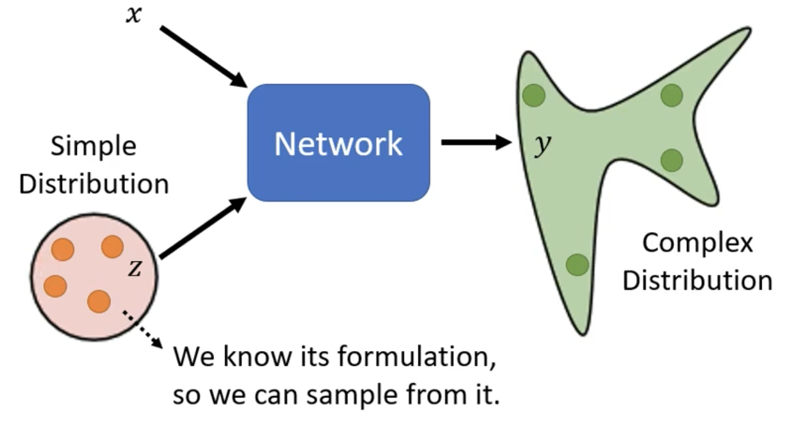
每次有一个X进来的时候都从这个distribution 里面做一个sample, 然后得到一个output, 随著 sample 到的 Z 不同, Y的输出也就不一样, 所以这个时候我们的network输出,不再是单一一个固定的东西,而变成了一个复杂的distribution。
所以可以输出 distribution 的NetWork 称为 Generater
Why distribution？
为什么需要输出的结果是一个 distribution ？
Example：video prediction, 给机器一段的视频, 然后它要预测接下来会发生什么事情
图中的 Video 是精灵的游戏，需要 NetWork 预测下一秒的游戏画面。输入是过去的几张游戏画面，输出新的游戏画面。
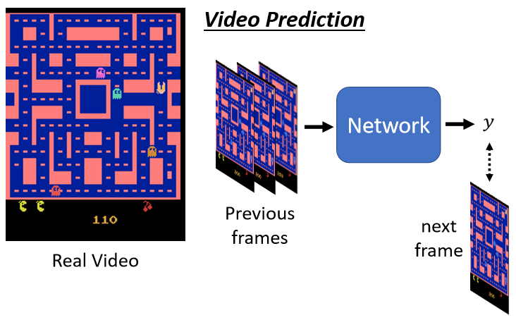
如果用 Supervise Learning 的方法 train 下去，得到的预测结果可能如图，预测的视频比较模糊, 而且中间还会变换角色, 小精灵走著走著居然分裂了, 有时候走著走著还会消失
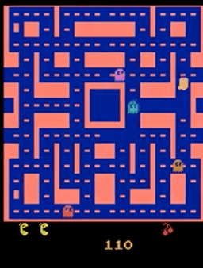
因为对这个network而言,在训练资料里面同样的输入, 存在两种可能性
- 有时候小精灵是往左转
- 有时候小精灵是往右转
因为模型需要得到一个输出, 这个输出同时距离向左转最近, 同时也距离向右转最近, 输出也就同时向左向右转，解决这个问题需要让model 的输出有机率, 让它不再是输出单一的输出而是输出一个概率的分布
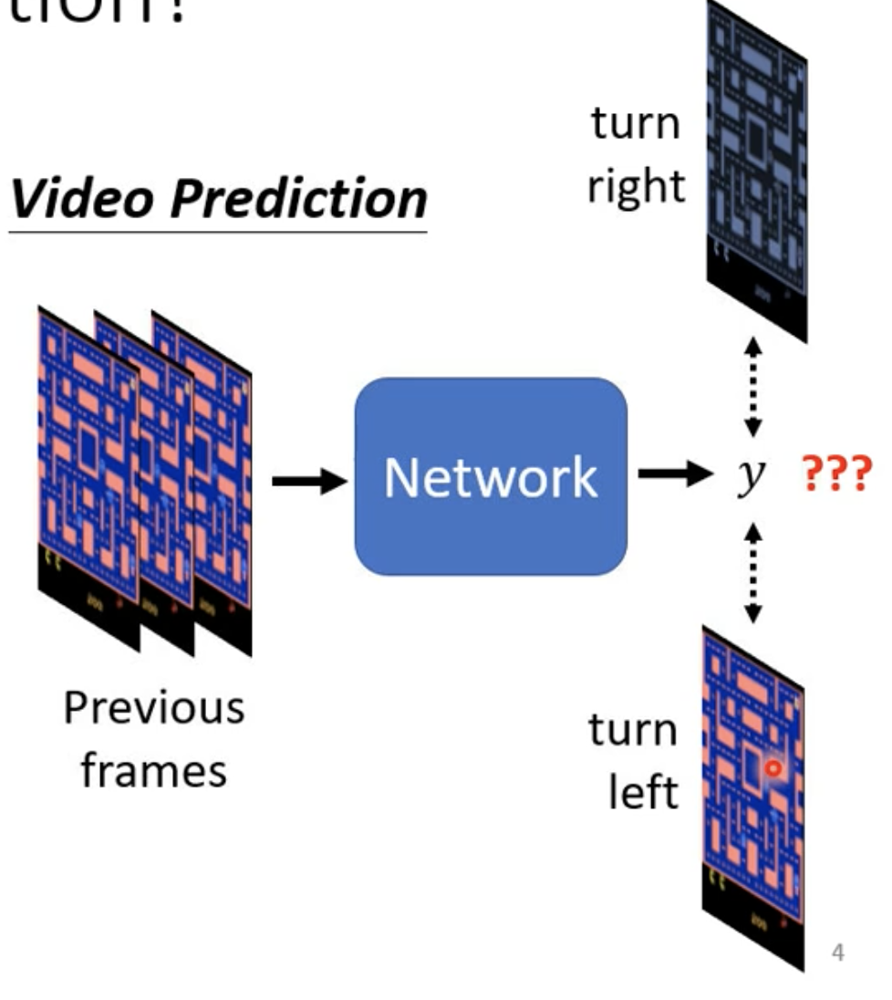
当给 network input,加上一个Z的时候,它的输出就变成了一个distribution, 它的输出就不再是固定的，而是包含了向左转的可能,也包含向右转的可能。
假设Z 是一个 binary的random variable, 只有0跟1，可能各佔50%。也许 network 就可以在 Z sample 到1的时候就向左转, Z sample到0的时候就向右转。
具体一点的讲法就是, 找一个function, 但是同样的输入有多种可能的输出, 而这些不同的输出都是对的。
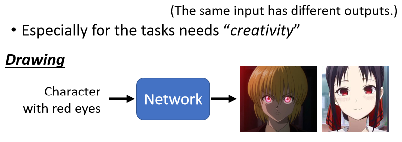
Generative Adversarial Network
Anime Face Generation
Unconditional generation
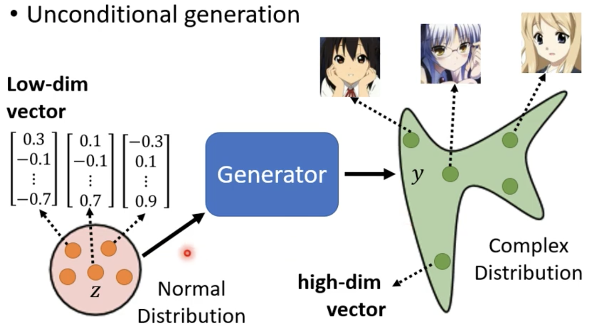
Z 为低纬度向量，一般50-100。y 是二次元人脸图，为高纬度向量。
Z 的distribution之间的差异对于结果的影响没有很明显，Generator 会将 distribution 对应到输出中去。
Discriminator
Discriminator：拿一张图片作为输入, 它的输出是一个数值，表示真实性。discriminator本身,也是一个neural network
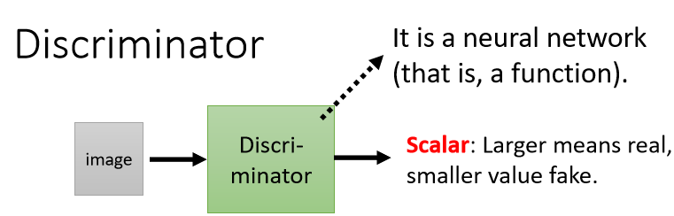
例如
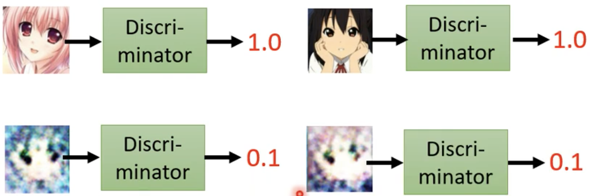
Discriminator 架构可以是 CNN、Transformer 等
Basic Idea
类似天敌之间协同进化，Generator 生成图像，Discriminator 进行打分，二者对抗
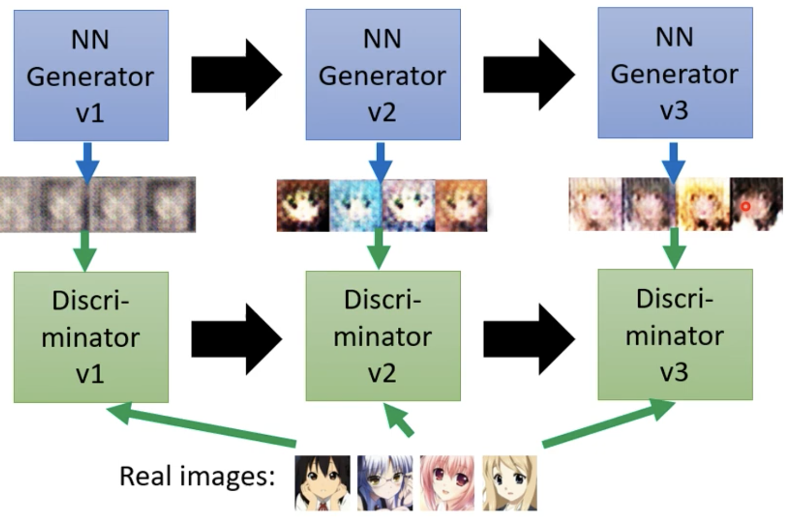
Algorithm
初始化 generator and discriminator
In each epoch
冻结generator参数，训练 discriminator D （将图库中的二次元人脸和generator的生成作为 D 的输入，label 分别是 1和0）
将D看做是 Classifier ：分类图库和生产
任务看做是 Regression：图库的图像输出1，生产的图像输出0
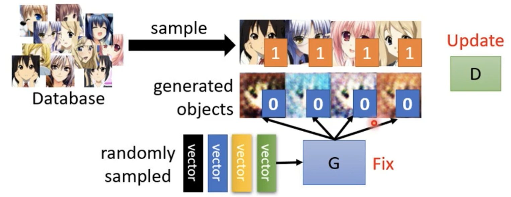
冻结 D，训练 generator （将 generator 和 Discriminator 看做大型网络，使得输出接近1，反向传播优化 generator 参数）
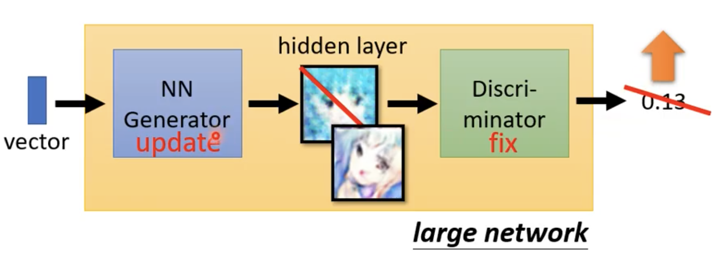
效果
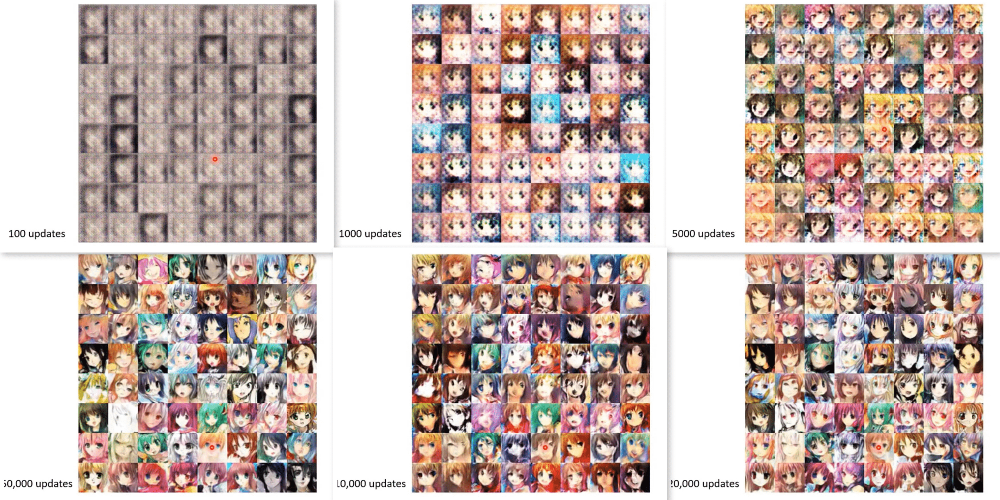
Style-GAN

Z 的变化
把输入的向量做插值（interpolation）, 会看到两张图片之间连续的变化
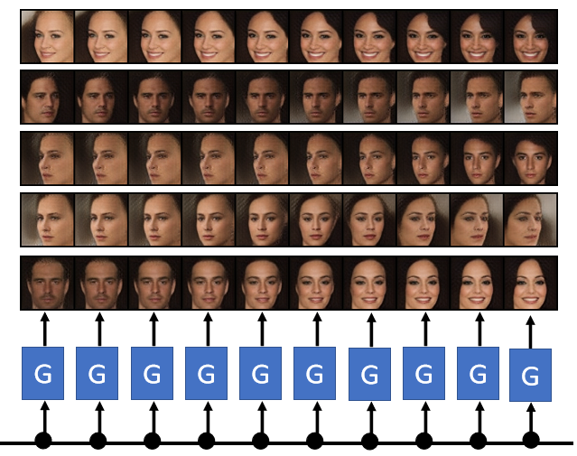
Theory behide GAN
Generator 产生的 complex distribution 称为 \(P_G\) ，真实的data distribution 称为 \(P_{data}\)，训练目标是二者尽量接近
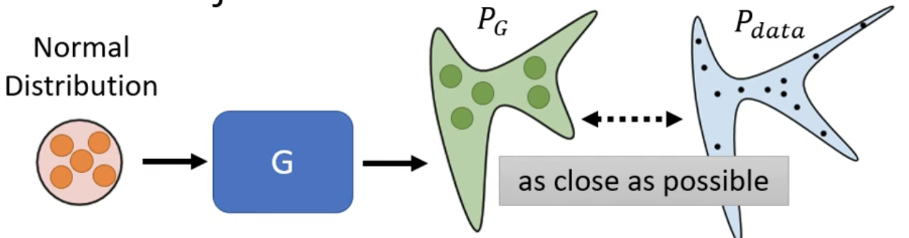
假设 Generator 的 Input 、Generator 的 Output 、真正的 Data 是一维的向量。Input 经过Generator 后得到的Output 是新的 distribution
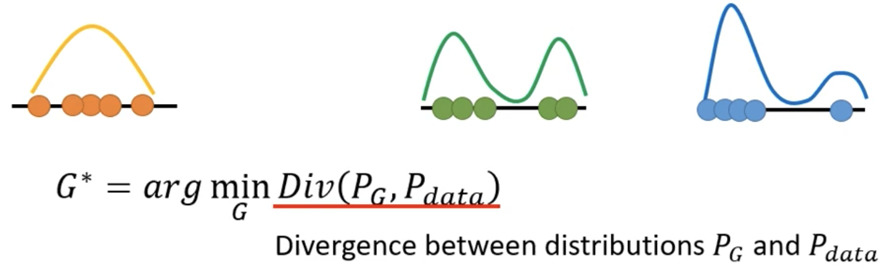
\(Div(P_G,P_{data})\), 指的意思就是 PG 跟 Pdata, 这两个 Distribution 之间的 Divergence(散度), 如果这个 Divergence 越大,就代表这两个 Distribution 越不像.
目标：找到Generator使得divergence最小，Generator记为 \(G^*\)
Divergence 计算
一些 Divergence 的式子, 比如说 KL Divergence, JS Divergence。这些 Divergence 用在这种 Continues 的 Distribution 上面, 要做一个很复杂的, 几乎不知道要怎麼算的积分, 那根本就无法把这个 Divergence 算出来，又要如何去找一个 G, 去 Minimize 这个 Divergence ？这个就是 GAN 所遇到的问题
但是GAN可以突破,我们不知道怎麼计算 Divergence 的限制
GAN 告诉我们，不需要知道 \(P_G\) 跟 \(P_{data}\) 实际上的 Formulation ，只要能从这两个 Distributions Sample , 就有办法计算 Divergence
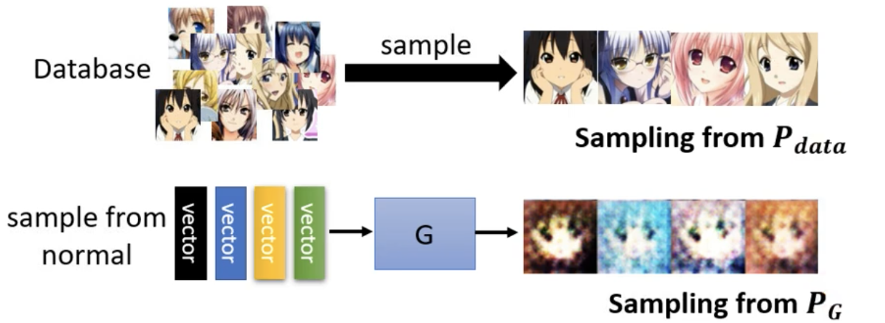
Discriminator
从sample 中 估测 \(P_G\) 跟 \(P_{data}\)的 divergence
训练的过程
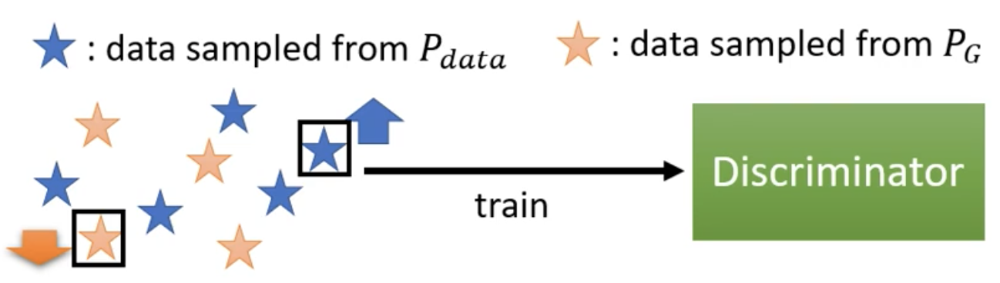
Training：\(D^* = arg\space \underset{D}{max}\space V(D,G)\)
Objective Function for D: \[ V(G, D)=E_{y \sim P_{\text {data }}}[\log D(y)]+E_{y \sim P_{G}}[\log (1-D(y))] \] \(E_{y \sim P_{\text {data }}}\) 表示从 \(P_{data}\) 中 sample 得到的 y ， \(E_{y \sim P_{\text {G }}}\) 表示从 \(P_{G}\) 中 sample 得到的 y，
Objective Function（要 Maximize 叫 Objective Function, 如果 Minimize 叫 Loss Function），找一个 D,它可以 Maximize 这个 Objective Function, 即Objective Function V越大越好 \(E_{y \sim P_{\text {data }}}\) 越大越好， \(E_{y \sim P_{\text {G }}}\) 越小越好。
事实上这个 Objective Function 就是 Cross Entropy 乘一个负号，本质在训练一个 Binary Classification
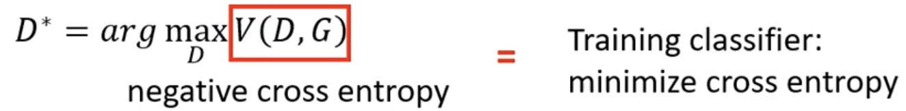
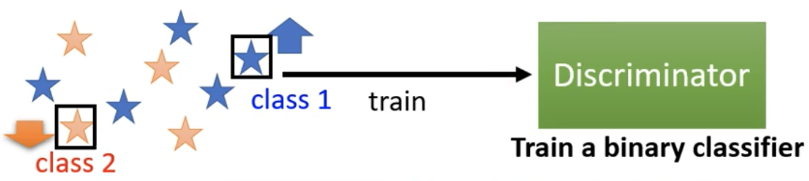
Note: 实际上，\(\underset{D}{max}\space V(D,G)\) 与 JS Divergence 是相关的，直观上若 \(P_G\) 跟 \(P_{data}\)的 divergence 够大，表示二者距离够远，训练出的 Classification 的\(\underset{D}{max}\space V(D,G)\) 也会很大。
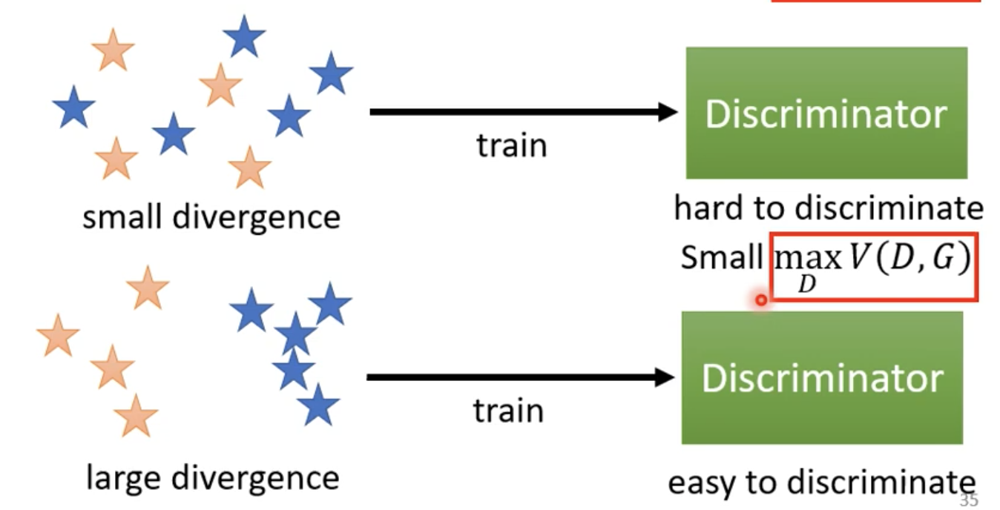
所以可以用\(\underset{D}{max}\space V(G,D)\) 替换 \(Div(P_G, P_{data})\)，得到 \[ G^* =\text{arg } \underset{G}{\text{min }} \underset{D}{\text{max }} V(G,D) \] Algorithm
- Initialize generator and discriminator
- In each training iteration
- Step 1( Find D to Maxize V ): Fix generator G, and update discriminator D
- Step 2( Find G to minimize \(D^*\) ): Fix discriminator D, and update generator G
如何设计不同的 Objective Function，参考文章
No Pain No GAN
GAN is difficult to train
JS divergence is not suitable
In most cases, \(P_G\) and \(P_{data}\) are not overlapped
- data 的特性：\(P_G\) and \(P_{data}\) 是高维空间中的低维 manifold，在高维空间的分布很狭窄。二者在高维空间的 overlap 可以被忽略
Sampling：即使\(P_G\) and \(P_{data}\) 有重叠，但 sample 的点可能并不能反映整体分布
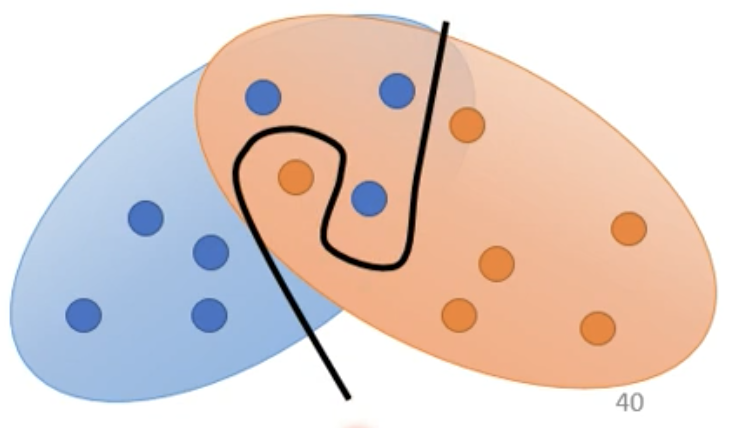
Problem of JS divergence：两个没有重叠的分布的JS divergence 计算恒为 log2
不能衡量没有重叠的 distribution 有多坏，如果两个分布没有重叠，或者 sample 的数量太少，binary Classifier 永远是 100% accuracy，很容易就区分开 \(P_G\) and \(P_{data}\) ，看不出 Generator 的 performance
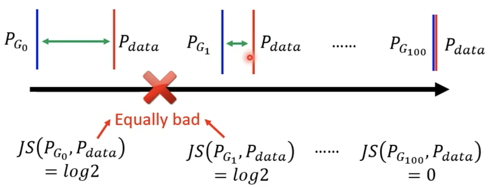
Wasserstein distance （replace JS Div）
- 考虑将一个分布P作为土堆，另一个分布Q作为目标
- Wasserstein distance = 推土机要移动土的平均距离
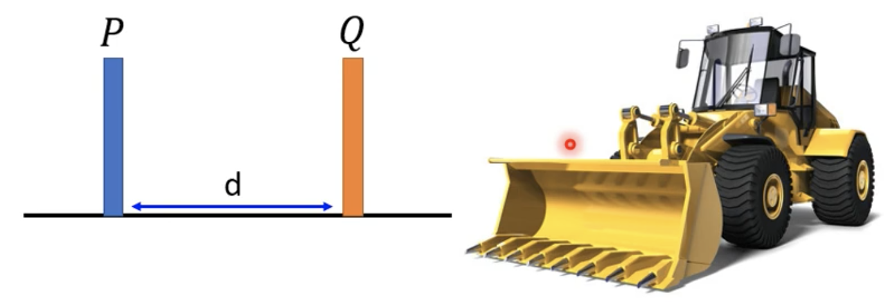
更复杂的 Distribution 计算 Wasserstein Distance 有点困难，因为把 P重新塑造成 Q 的方法有无穷多种，所以计算的 Wasserstein Distance 不同
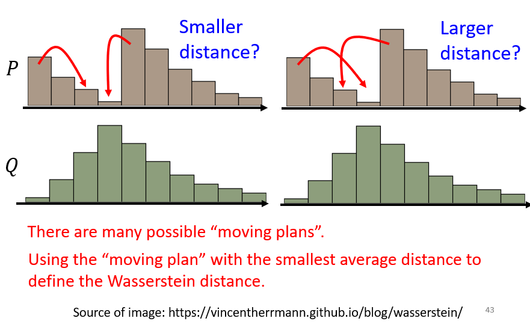
所以穷举所有的plan，分别计算 distance，取其中最小作为 Wasserstein Distance。而且可以衡量不同的 sample 独立分布之间的距离，从而可以知道 Generator 的 performance 是不是变得更好
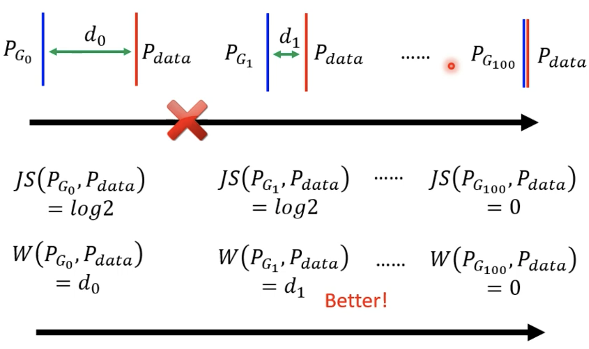
WGAN
使用Wasserstein Distance 的GAN 也称为 WGAN
Evaluate Wasserstein distance between \(P_{data}\ and\ P_G\) \[ \underset{D\in{1-Lipschitz}}{max}\{E_{y\sim P_{data}}[D(y)]-E_{y\sim P_{G}}[D(y)]\} \]
- y 如果是从 \(P_{data}\) 来的, 计算它的 D(y) 的期望值
- y 如果是从 \(P_G\) 来的, 计算它的 D(y) 的期望值,但是前面乘上一个负号
- D必须是一个 1- Lipschitz 的 Function, 也就是D 必须要是一个足够平滑的 Function
如果 D 没有限制，训练就无法收敛，如果没有重叠，D(y) 会趋于无限大. 保证D的平滑，才能保证距离远的distribution 的 D(y) 大于 距离近的distribution 的 D(y)，否则与 JS Divergence 没有区别
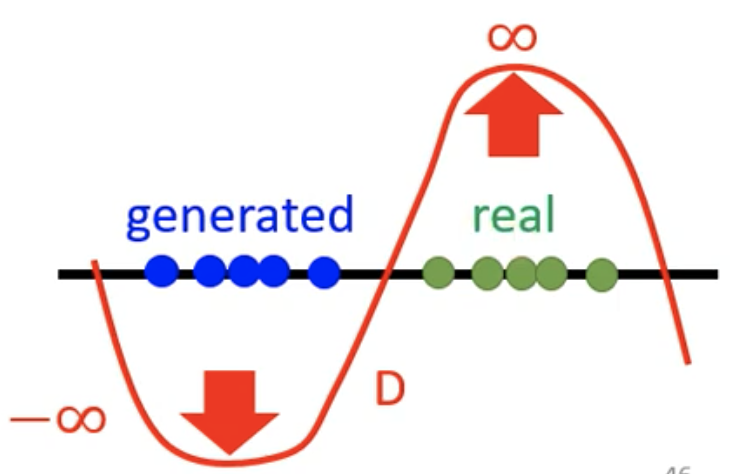
所以要 Maximum Objective Function, 会达成这样的效果
- 如果 y是从 \(P_{data}\) Sample 出来的, Discriminator 的 Output 要越大越好
- 如果 X 是从 \(P_G\) Sample 出来的, Discriminator 的 Output,应该要越小越好
如何限制D？
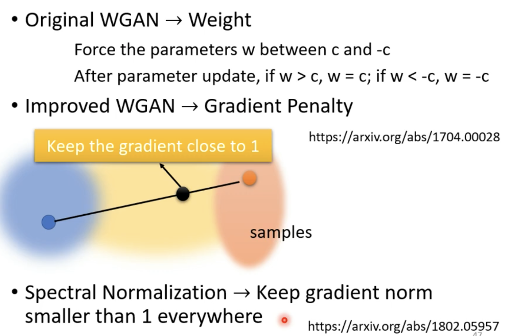
GAN is still challenging
GAN的本质上困难的地方
- Discriminator 要分辨真的图片跟生成的图片的差异
- Generator 要去生成假的图片,欺骗 Discriminator
一旦其中一个 Train 的过程中发生问题，性能变差，那另一者也就无法 Train 的更好，甚至还会变差。
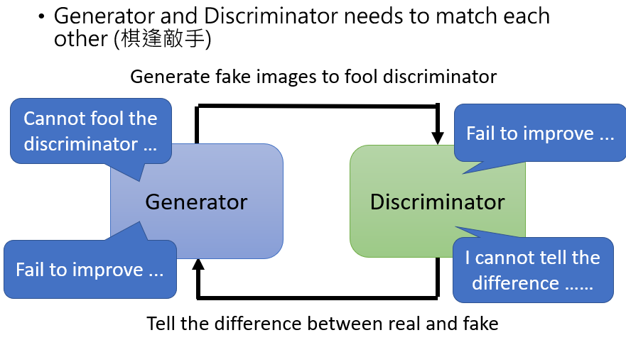
Train 之前需要设置Hyperparameters，一旦开始train，Generator 和 Discriminator 对抗的过程都是自动的，如果有一次某个NetWork的 LOSS 没有下降，那整个的GAN的 train 可能就到此为止了
一些相关的,跟 Train GAN 的诀窍有关的文献
GAN for Sequence Generation
利用GAN进行文字生成，最困难的Task
Generator 负责生成文字，Decoder 会產生一段文字，Sequence To Sequence 的 Model就是我们的 Generator。Discriminator 把这段文字读进去,去判断这段文字是真正的文字的分数
难点在于，做不到用Gradient Descent, Train Decoder, 因为如果Decoder 的参数有一点小小的变化，那输出的 Distribution, 也会有小小的变化, 那因為这个变化很小,所以它不会影响最大的那一个 Token，在取 Max 找分数最大那个 Token 的时候, 分数最大的 Token 没有改变，所以 Discriminator Output 分数并不会发生变化。
Token 就是你现在在处理这个问题, 生成的 Sequence 的单位。
- 假设在生成一个中文的句子的时候, 每次產生一个 Character 汉字, 那方块字就是 Token
- 假设在处理英文的时候, 每次產生一个英文的字母, 那字母就是 Token
- 假设一次產生一个英文的词, 英文的词和词之间是以空白分开的,那就是词就是 Token
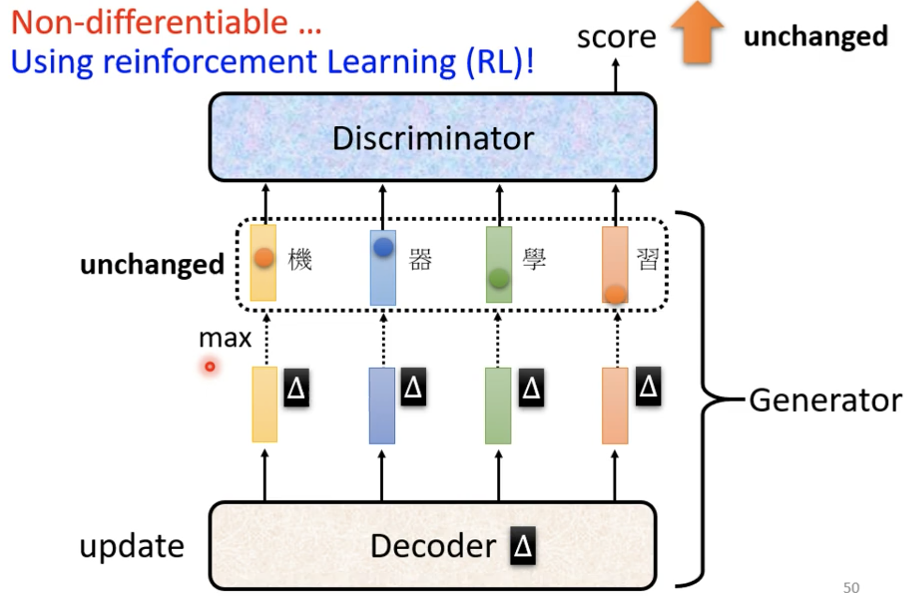
无法梯度下降的情况，可以看做是 Reinforcement Learning 的问题，但是十分难训练所以有很长一段时间,没有人可以成功地把 Generator 训练起来產生文字,通常需要先做 Pretrain。
直到有一篇 Paper 叫做 ScrachGAN，Train Language GANs From Scrach。可以直接从随机的初始化参数开始Train Generator, 然后让 Generator 可以生成文字, 它最关键的就是爆调 Hyperparameter,跟一大堆的 Tips
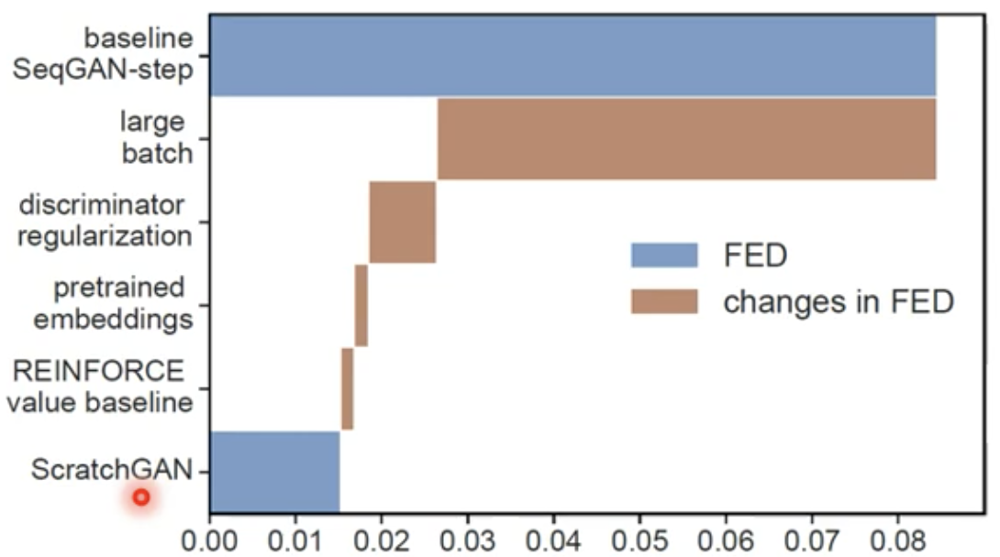
更多
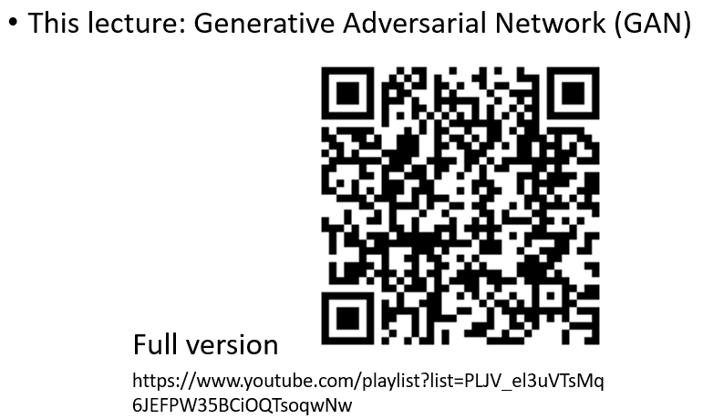
其他类型 Generative 的 Model ，但通常 VAE 或 FLOW-Bases Model,它们的结果,都是跟 GAN 有非常大的一段差距，但是训练的难度并没有简单多少。
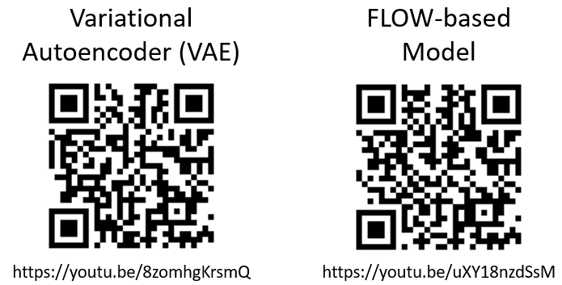
Supervised Learning 的方法来做 generative
Task：输入一个 从 Gaussian 的这个 Random Variable,Sample 出来的 Vector, 经过 NetWork 把它变成一张图片。
Method：准备图库，每一个图片都匹配一个从 Gaussian Distribution Sample 出来的 Vector，Network 输入 vector，输出固定大小的图片，图库的图片就是数据的 label。
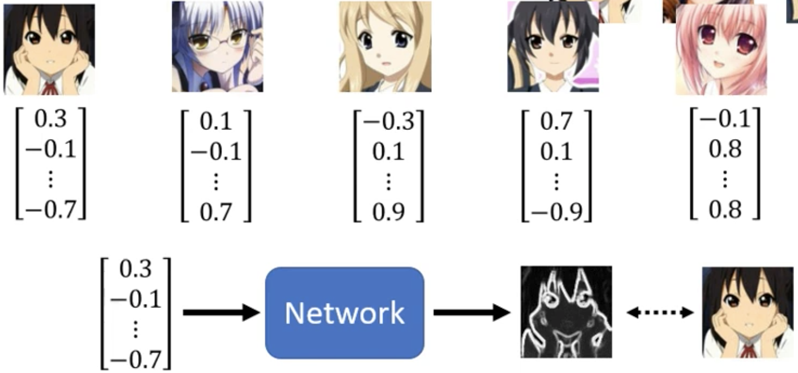
如果输入纯粹是随机的向量, Train 起来结果会很差, 可能根本连 Train 都 Train 不起来, 所以需要有一些特殊的方法。
Generative Latent Optimization (GLO), https://arxiv.org/abs/1707.05776
Gradient Origin Networks, https://arxiv.org/abs/2007.02798
Evaluation of Generator
评估一个 Generator 的好坏：早期是通过人的直接观察进行评判，但是人的评判不稳定且受主观因素影响大。有没有比较客观,而且自动的方法,来想办法量一个 Generator 的好坏？
设计一个图像识别系统，把你的 GAN 生成出来的图片,输入分类系统裡面, 看生成的结果。输入是一张图片 叫做 y, 输出是一个机率分布叫 P ( c│y ), P ( c│y ) 是一个机率的分布。机率的分布如果越集中,就代表说现在產生的图片质量可能越好。
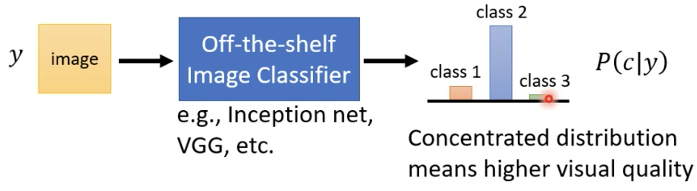
问题： Mode Collapse 和 Mode Dropping两个都是GAN训练过程中由于 Divergence Function 选取不佳而产生的问题
Diversity - Mode Collapse，Generative Model, 输出的图片来来去去,就是那几张。比如人脸生成，图片有不同的发色，随着生成过程发现头发的颜色越来越多, 但通通都是同一张人脸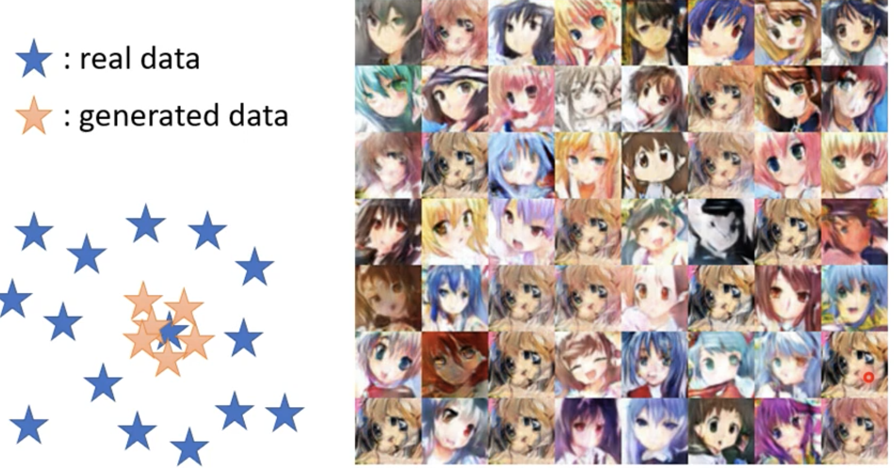
主要是由于实际的数据分布峰值有多个，而训练只拟合了其中的一个，如下图所示。
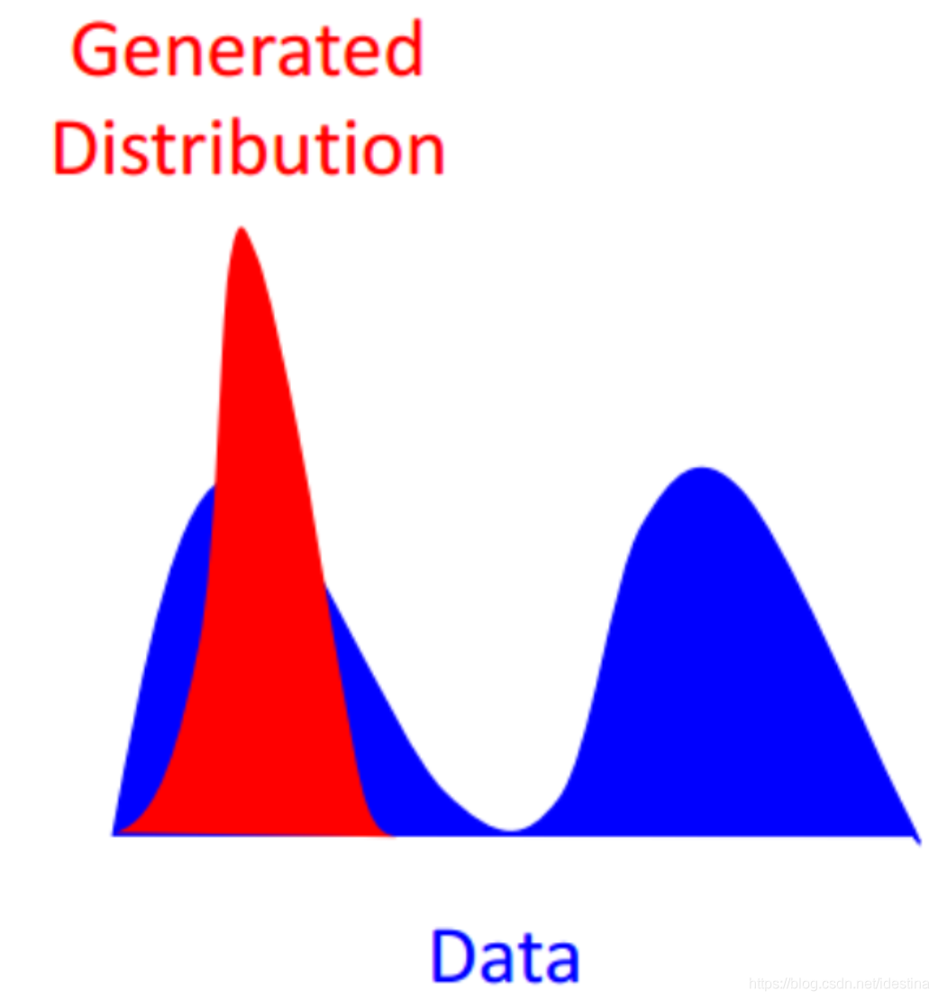
这种现象很可能是因为Discriminator 存在盲点，Generator 抓住盲点之后都生成这个盲点的图片欺骗过Discriminator。只能在 Generator 发生
Mode collapse之前停止训练。Diversity-Mode Dropping，真实数据的分布要大于生成数据的分布，生成数据的多样性不足，所以要衡量Generator的多样性是不是足够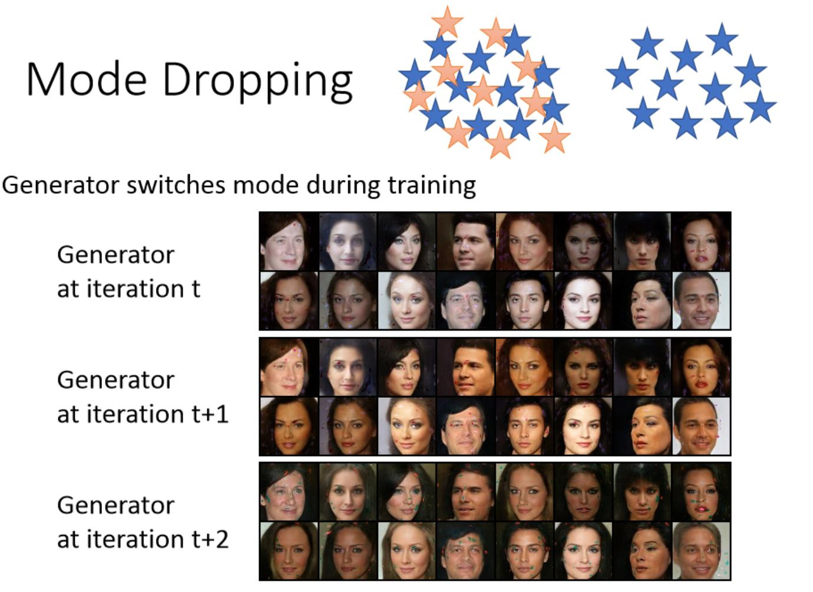
同样借助 image Classifier 对生成图片进行分类，输入一张图片，得到模型输出结果是不同类别的 distribution，将所有图像的 distribution 进行平均得到 average distribution，集中代表多样性不够，足够平坦代表多样性不错.
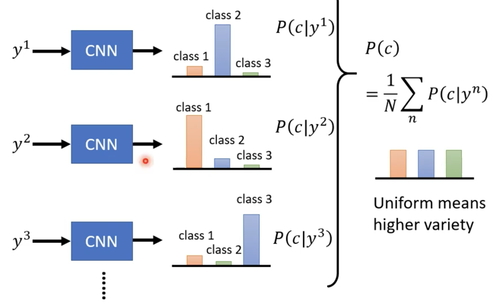
过去有一个非常常被使用的分数,叫做 Inception Score, 缩写 IS,所谓 Inception Score, 顾名思义是用基于CNN的 Inception 模型来做的，Good quality, large diversity -> Large IS，但是在人脸的Generator中，Inception 模型的结果可能只有一个人脸，分数可能很低
Fréchet Inception Distance (FID)
不使用 Inception Net 的最终结果进行 Measure，而是用进入 Softmax 之前的 Hidden Layer 的输出（高维向量）代表人脸，虽然最后分类的类别可能是一样的, 但是高维向量可能还是不一样的。其实是最后一层 Hidden Layer 的输出。
FID 假设 Generator 生成 和 Real 的distribution 都服从 Gaussian Distribution，然后计算二者的 Fréchet Distance
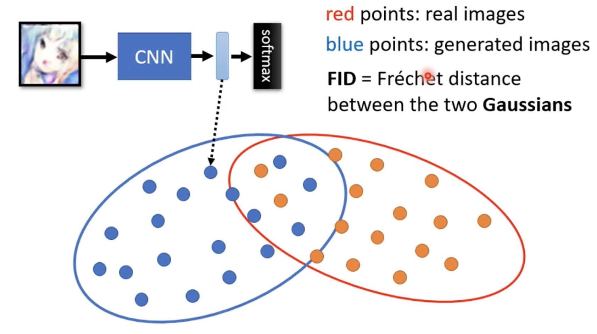
准确的得到 Generator 的分布，需要大量的Generator的sample
We don’t want memory GAN.
Train Generator 其实是希望它生成新的图片,** 训练资料裡面没有的人脸**, 如果训练资料裡面有一模一样的人脸, GAN 也就失去了存在的意义。当生成的图片和实际的图片一模一样，FID的值一定十分小。
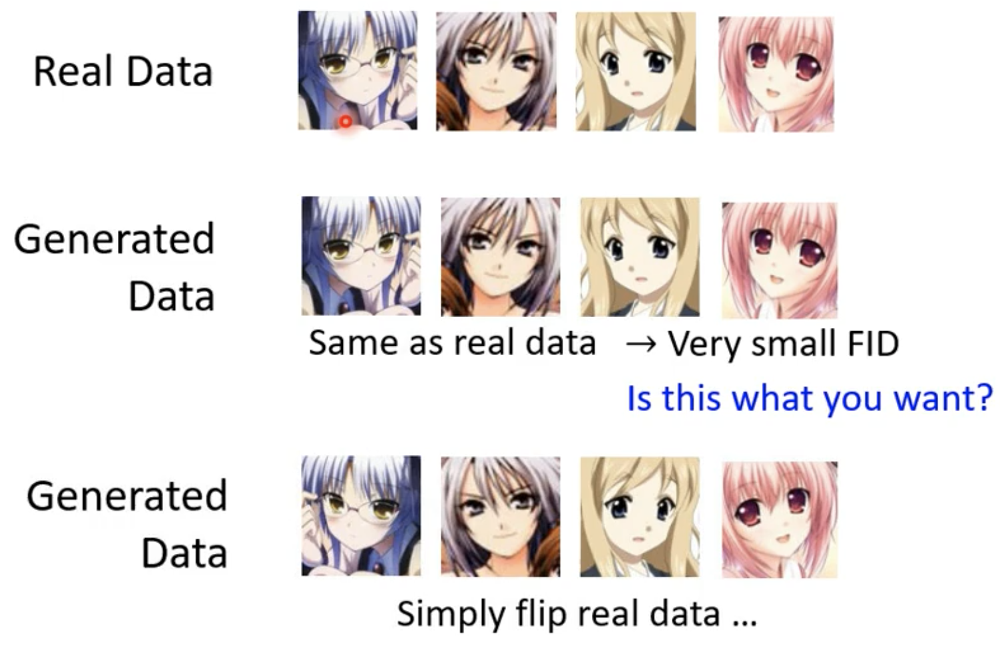
但是生成图片如果是实际图片的翻转也同样没有意义，但是和实际图像的相似度却很远。所以 GAN 的 Evaluation是非常地困难的，相关的文章 https://arxiv.org/abs/1802.03446 ,裡面就列举了二十几种,GAN Generator 的评估的方式